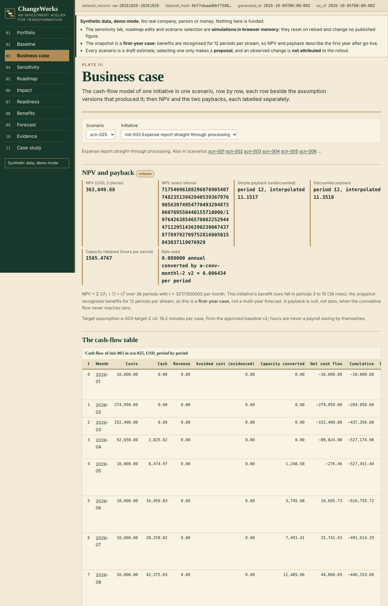
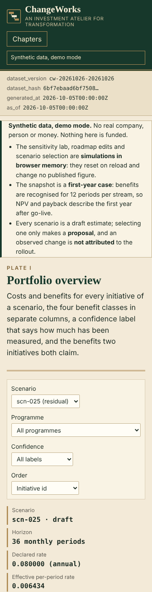

[ Work ]Dashboard · Transformation · Business case · FastAPI · ReactCase 232 / 236
Which Transformation Initiative Should Be Funded, and How Will Success Be Established?
ChangeWorks: a transformation portfolio laboratory where every benefit keeps its class. Cash, avoided cost, revenue and released capacity are never summed into one number without a declared conversion; the approved baseline is immutable and a forecast revision never overwrites it; adoption ramps and benefit lags are modelled rather than assumed; two initiatives claiming the same capacity are meant to be counted once with the residual explained before a scenario can be proposed (the review found the portfolio total still counted it twice; it is now counted once, with the sum shown beside it); and nothing in the product funds anything. The known answer: a cost of 1,000 at period 0 and inflows of 600 in periods 1 and 2 at a 10% annual rate give an NPV of 5000/121 = 41.32, with simple and discounted payback labelled separately and 800 capacity hours kept out of the cash flow. Synthetic data; project 09 of the Business Data Lab.
What needed answering
The transformation portfolio review argues about a spreadsheet. Time savings are booked as cash savings although nobody's hours were removed from payroll; two initiatives claim the same released capacity; an annual discount rate was applied to monthly periods; benefits start before the system is deployed; training completion is reported as adoption; the forecast was overwritten after a missed target so the original approval is gone; a dependency loop makes the roadmap impossible; a one-time licence recurs every month by accident; and avoided cost is added to realised savings as if both were cash.
ChangeWorks fixes the arithmetic first: four benefit classes kept apart, a cash flow that admits capacity only through a declared conversion, a discount rate whose basis matches the period, benefits that cannot precede deployment, adoption with its denominator preserved and training kept separate, an immutable approved baseline with every forecast revision beside it, a dependency graph that refuses cycles and reports shared-resource conflicts, a double-count residual that must be explained, and a scenario whose only reachable state is proposed.
The build
Two implementations of one contract, checked against a hand calculation and each other.
- The contract: benefit classes cash, avoided cost, revenue and capacity with amounts in money or hours; net cash flow from the cash classes only, avoided cost entering only with evidence of realisation and capacity only through a conversion assumption that names its hourly rate and staffing evidence; one-time costs in exactly one period and recurring costs expanded over a half-open range; NPV as an exact rational over the declared rate whose basis must equal the period basis, with an annual rate on monthly periods converted explicitly and recorded; simple and discounted payback as the last period in which the cumulative flow crosses zero, so a later dip is not ignored, each with an interpolated figure and null when never crossed; benefits that cannot start before deployment and ramps that keep the unramped plan visible; capacity released as volume times minutes saved over sixty; an approved baseline that only a new version can correct; forecast revisions that never overwrite the original; cost variance and benefit realisation within one benefit type on matured periods with the baseline trend shown beside the raw change; dependency delay from feasible starts with cycles refused and resource overallocation reported apart; readiness as a weighted assessment, not a probability; a double-count residual counted once per shared source key; and a proposal that is never a funding.
- A known-answer fixture written first: the 1,000 then 600 and 600 case at 10% gives NPV 5000/121 = 41.32, simple payback in period 2 (1.6667 interpolated) and discounted payback in period 2 (1.9167), with 800 capacity hours excluded and 400.0000 hours of capacity released; a second initiative with recurring costs, a ramp and an avoided-cost benefit whose NPV is −57.85; a third that never pays back (both paybacks null, not rejected); a dependency chain with delays of 2 and 3 periods; two initiatives sharing one cost line, giving a double-count residual of 75.00 explained by that key; readiness, adoption, training, risk exposure, cost variance and a forecast revised once with the original kept; plus a rejected variant (30 rejected records on monthly periods: a repeated one-time cost, an annual rate on monthly periods, a benefit before deployment, a dependency cycle, an overallocated resource, a capacity benefit claiming cash without a conversion) and an empty variant. A standard-library script reproduces 3,156 checks from the records.
- The Python domain, PostgreSQL schema and FastAPI commands: establish and approve a baseline, assess an opportunity, build cash flows, map impacts, assess readiness, plan the roadmap, select a scenario as proposed, record adoption, track benefits and revise a forecast; 495 tests on a GitHub-hosted runner (454 tests of the application and 41 of the analyst artifact package) against PostgreSQL 16 including the twelve adversarial scenarios of the specification detected and recovered, and an independent SQL recomputation that agrees with the domain on the fixtures, at fourteen other instants and on sixty seeded populations.
- The static site: the same contract in TypeScript with rational arithmetic only, a portfolio overview with benefits by class and the double-count residual, baseline evidence, the business case with its assumption versions, a sensitivity lab, the roadmap with dependencies and resource lanes, change impact, readiness review, the benefits register, forecast comparison, evidence and the case study; 3,812 golden and snapshot checks against the Python domain at five instants, six windows, seven horizons and a 61-point rate grid, 63 review-finding checks over 34 hand-worked worlds, and 81 Playwright tests at four widths and 200% zoom, one of them a contrast check.
- A deterministic synthetic world: 24 initiatives in four programmes over 36 monthly periods, 30 process baselines in two approved versions, 160 assumption versions, 900 cost and 700 benefit items across the four classes with ramps and lags, 40 dependencies, 8 shared resources, 60 stakeholder groups, 300 readiness assessments, 500 adoption observations, 200 training completions, 400 benefit observations with baseline trends, 120 risks, 30 scenarios and 12 forecast version sets, with seven designed relationships and twelve injected defects (time savings booked as cash, two initiatives claiming one capacity, an annual rate applied monthly, a benefit before deployment, training read as adoption, a forecast overwrite, a dependency cycle, a never-paying-back case shown with a payback, an overallocated specialist, an improvement attributed entirely to the rollout, a one-time cost recurring, avoided cost added to cash) published with how each must be handled.
Step by step
- Step 01
The known answer before any volume
A cost of 1,000 at period 0, inflows of 600 in periods 1 and 2, a 10% annual rate: NPV is −1000 + 600/1.1 + 600/1.21 = 5000/121 = 41.32. The undiscounted cumulative flow reaches zero in period 2 (1.6667 interpolated) and the discounted one in period 2 (1.9167); both are labelled. The 800 capacity hours on the same initiative stay out of the cash flow because no conversion assumption exists. A standard-library script reproduces every figure from the records before the application exists.
- Step 02
Four classes, one conversion rule
Cash and revenue enter the cash flow. Avoided cost enters only with evidence that a budget line was removed; otherwise it is shown beside the flow. Capacity enters only as a derived cash item that cites an hourly rate and staffing evidence; hours are never a payroll saving by themselves.
- Step 03
Nothing is overwritten, nothing is funded
An approved baseline is frozen; a correction is a new version with a reason. A forecast revision creates the next version and the comparison shows the original, every revision and the observed values. Selecting a scenario makes it proposed; the product has no funded state.
- Step 04
Two modes, disclosed
Mode A is the backend on a GitHub-hosted runner with a transient PostgreSQL. Mode B is the public site over a published snapshot; the sensitivity lab, roadmap edits and scenario selection simulate their actions in browser memory, and nothing is proposed or revised from them.
Results
The business case on the synthetic snapshot (scenario scn-025, the one carrying the designed relationships; the cash-flow table carries the assumption version beside each row):

The portfolio overview on a phone:

What the data supports. In the scenario that carries the designed relationships, the 24 initiatives plan costs of 25,914,200.00 against cash benefits of 15,288,067.20, revenue of 6,074,000.13, evidenced avoided cost of 5,516,433.35 and converted capacity of 1,774,010.55 (of which 207,146.32 is the shared claim counted twice), with a further 4,025,383.47 of avoided cost shown beside the cash flow and 145,045.62 capacity hours not converted; the sum of the initiative NPVs is 1,438,382.25, but that sum counts the two initiatives' shared capacity claim twice (present value 195,233.20), so the portfolio NPV counted once is 1,243,149.05, which the page shows with the sum beside it; within the twelve-period benefit window six initiatives never reach simple payback and six never reach discounted payback, four of them because no benefit of theirs enters the cash flow at all (capacity without a conversion, avoided cost without evidence) and two because what enters returns less than their cost within the horizon. Two initiatives claim the same finance team's capacity, so of the portfolio's 32,677,894.70 of money-class benefits (including the 4,025,383.47 shown beside the flow) only 32,470,748.38 are attributable once, and the residual of 207,146.32 must be explained before the scenario can be proposed; the same shared capacity is also claimed twice in hours, 5,974.80 of them in this scenario, reported as an hours residual beside the money one since the review. One initiative's only benefit is released capacity: 2,920.48 hours, summed exactly that never enter the cash flow without a conversion, an NPV of −761,535.73 and no payback. Six initiatives never pay back in any scenario that contains them; the one the generator designed for it returns 0.531465 of its cost in this scenario and 0.620043 in the scenarios that use the earlier ramp; the page shows null, not a date. One forecast was revised twice after observed periods fell more than ten percent short, from 745,800.06 to 598,900.05 to 534,207.54, with the original kept beside the revisions. A shared specialist is at capacity in five periods (12 to 16; the manifest and this page first said three) and three further requests were refused; the shared change managers are at capacity for eighteen periods. Of the eleven initiatives with both training and adoption observations, five reach half of the eligible population four to six periods after training reaches ninety percent and six have not reached half; pooled training completion is 0.888443 over fifteen initiatives (0.963778 over the eleven) against pooled adoption 0.532881. One initiative's observed improvement is 0.848744 baseline trend, shown beside the raw change as observed, not attributed; the generator drew every trend as a share of the observed value, so that figure is the designed parameter, which the manifest discloses. These are the generator's designed relationships and the one-draw realisation, published in its manifest and found by the site; they are not findings about any real organisation.
Found by review, then fixed. An independent reviewer, briefed to disprove the page, confirmed fourteen defects on the branch, and four published figures were wrong; the figures were corrected first and the code followed. A scenario now freezes the cost items and assumption versions it saw when it was created, so a later scenario cannot change a proposed one's figures. The portfolio NPV and the class totals count the shared capacity once (1,243,149.05 against the plain sum of 1,438,382.25) and the hours claimed twice are reported as their own residual (5,974.80). Whitespace-only evidence is refused, a cost key cannot change its one-time or recurring basis, and the three initiatives that book benefits before their dependency-feasible start are flagged on the business case. Hour totals are summed exactly rather than from rounded rows. A forecast revision must cover every period it replaces, and the preserved flag is computed, not constant. An observation dated before its baseline start is refused, and every observation carries the instant it was recorded, so published history cannot be changed silently. Payback is the last crossing of zero, so a flow of zero at period 0 is no longer paid back and a later dip is not ignored, with the reasons no investment, not recovered and no flows stated separately. Partial trend coverage raises a warning, an invalid period start is a rejected record rather than a crash, and the text contrast on the ivory ground meets the 4.5:1 ratio, with a test that keeps it there. The known-answer fixture gained the frozen-scenario case and the new rules; the test suite grew from 399 to 454, the golden checks from 2,431 to 3,812 and the independent reference script from 1,810 to 3,156 checks, and the synthetic world is byte-identical to the one published before the review.
Not built yet: resource levelling that shifts starts, a database-level guard on the proposal rule, declared uncertainty ranges on estimates (the specification asks for them; every estimate is still published to the cent), and the formula-driven workbook and executive recommendation of the deliverables.
Next
- Resource levelling that shifts starts, and the proposal transition under a database trigger.
- Pin ties and three claimants in the double-count rule and the monthly golden case in the fixture.
- Project 10 of the lab follows the same gates.